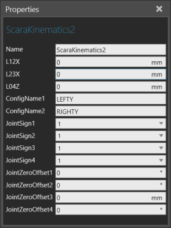

A Scara Kinematics behavior calculates the forward and inverse kinematics of a Robot Controller for a SCARA type robot in which the wrist is defined in one axis (generally the Z-axis) and has two possible configurations (Left and Right).

| Name | Description |
| Name | Defines the name of the kinematics. |
| L12X to L04Z | Defines the offset between two joints in a given axis.
L12X L23X L04Z |
| ConfigName1 to ConfigName2
|
Defines the names of configurations for the robot's arm. Different robot types may use different naming conventions for the same configurations. |
| JointSign1 to JointSign4 | Defines which direction is the positive direction of a joint, for example if you flip joint rotation from clockwise to counter-clockwise. |
JointZeroOffset1 to JointZeroOffset5 |
Defines the joint-zero pose of the robot (arm-up space). JointZeroOffsets are used as a kinematic solution for determining the robot's pose when its joints are at zero value. Different robot vendors tend to use different joint zero positions for robots. |